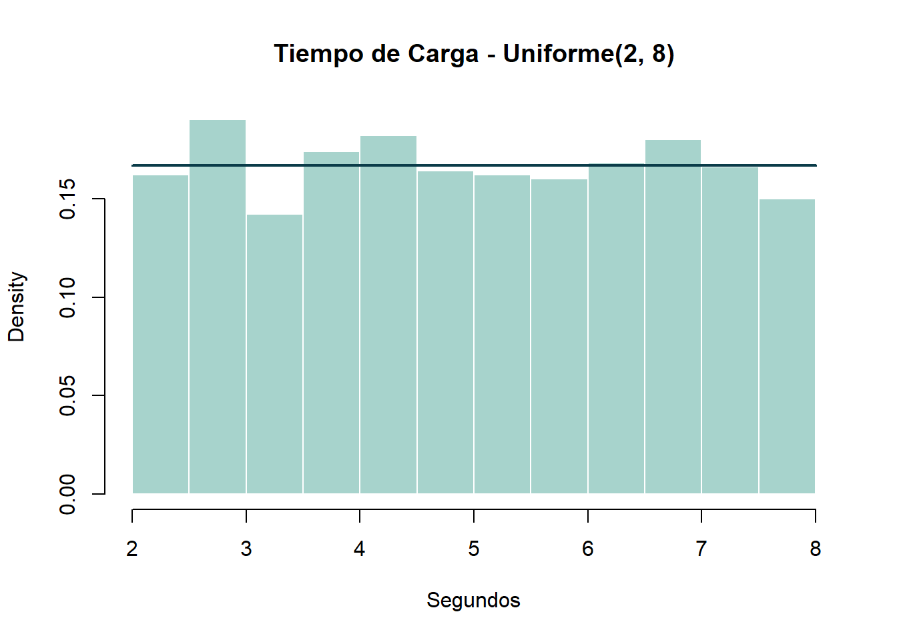
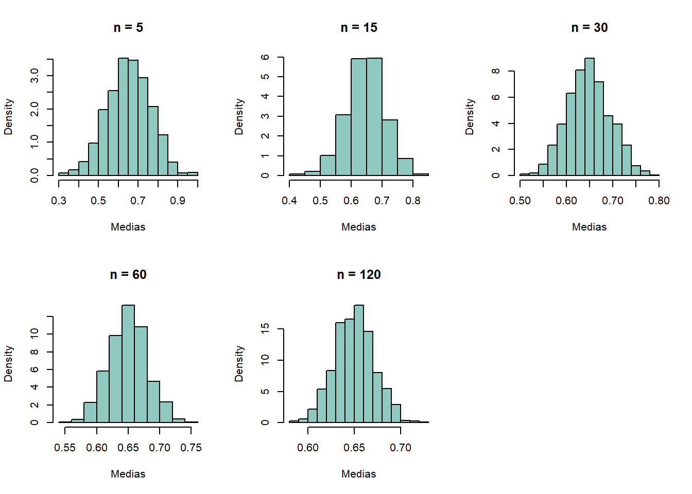
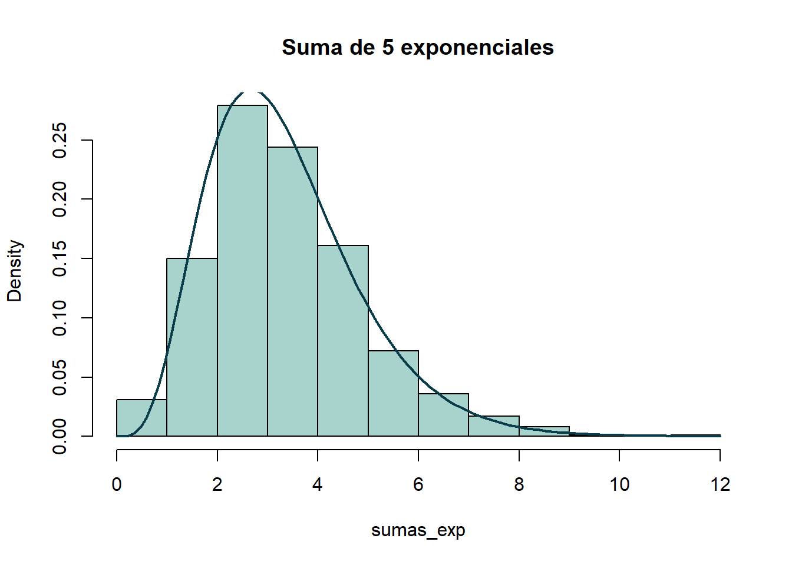
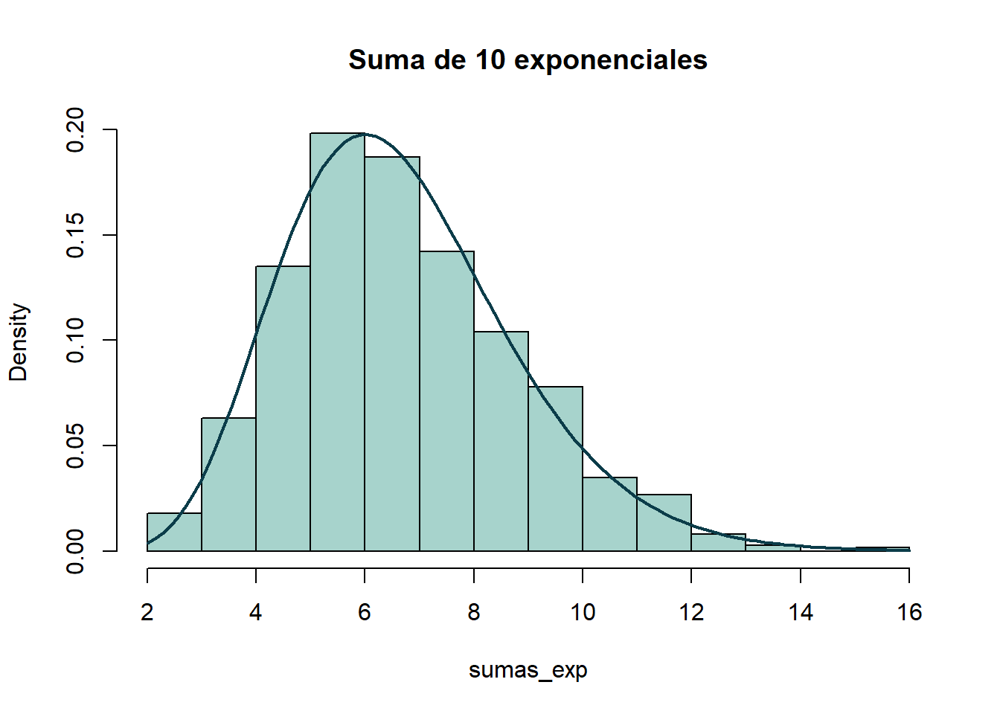
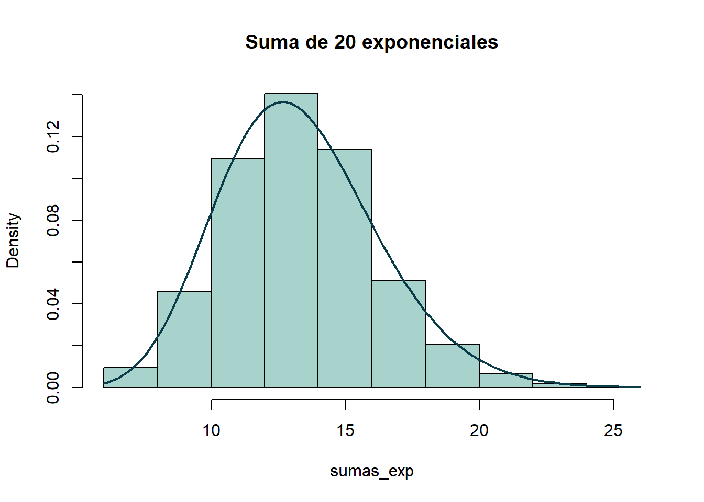
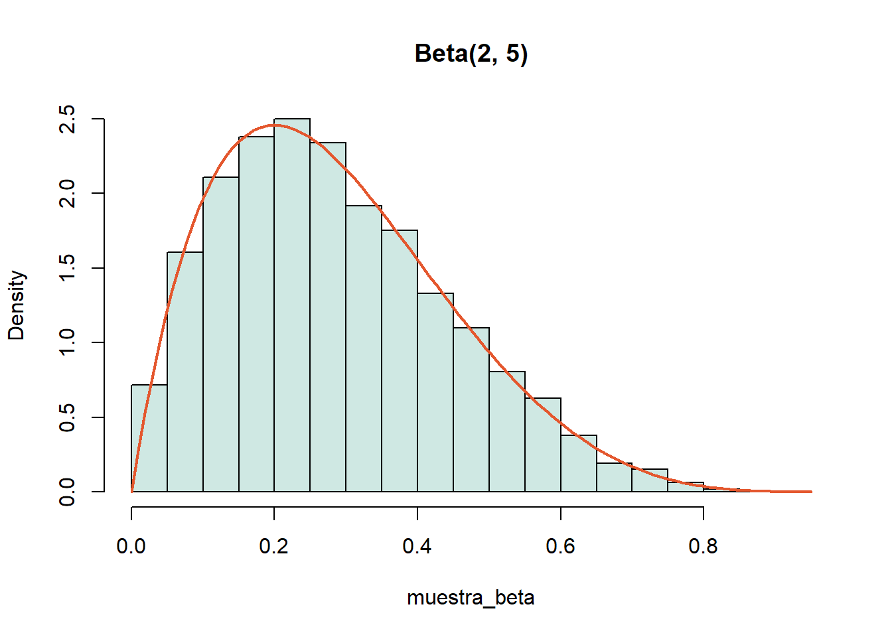
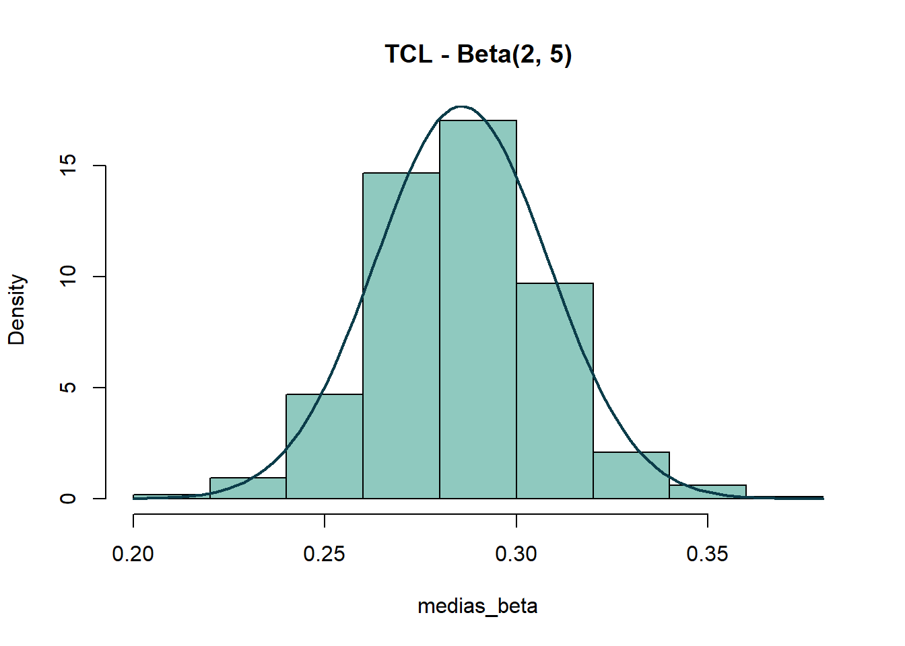
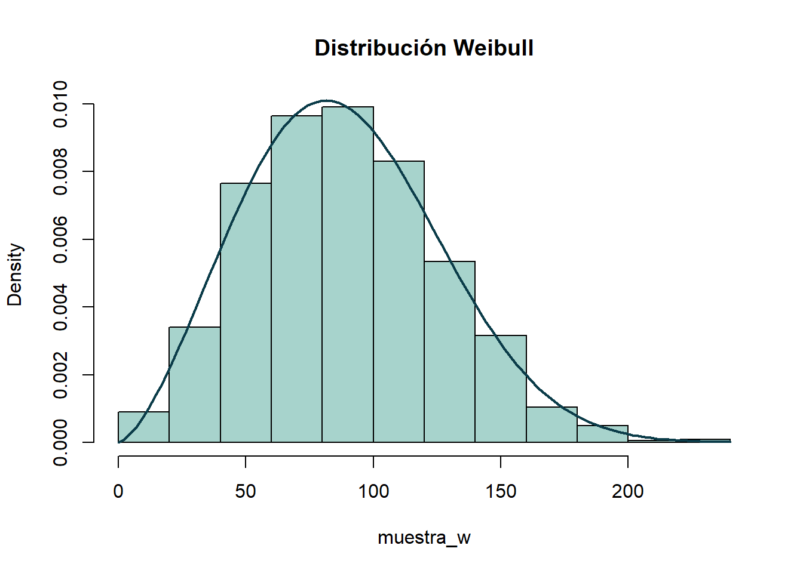
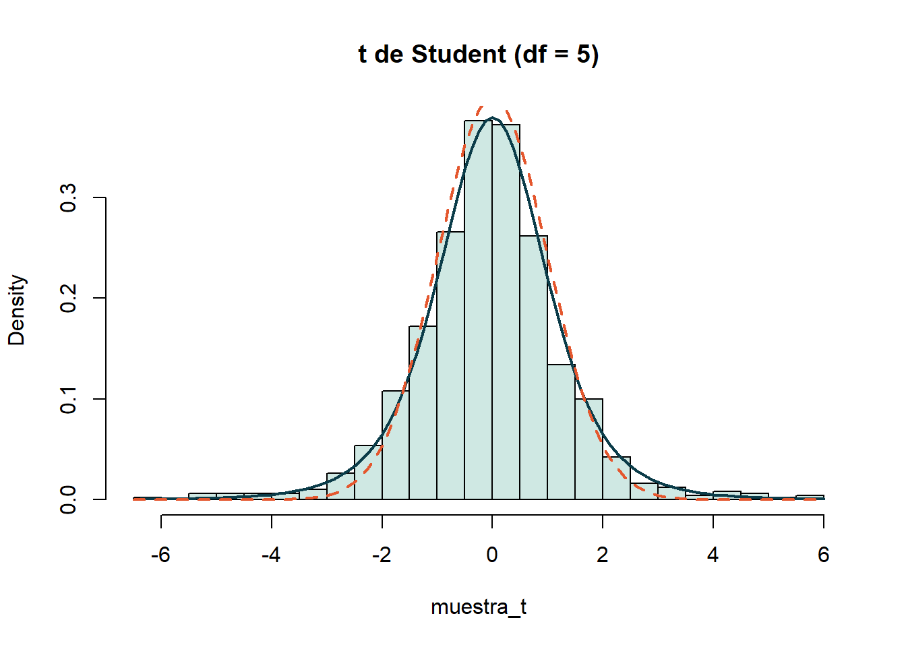
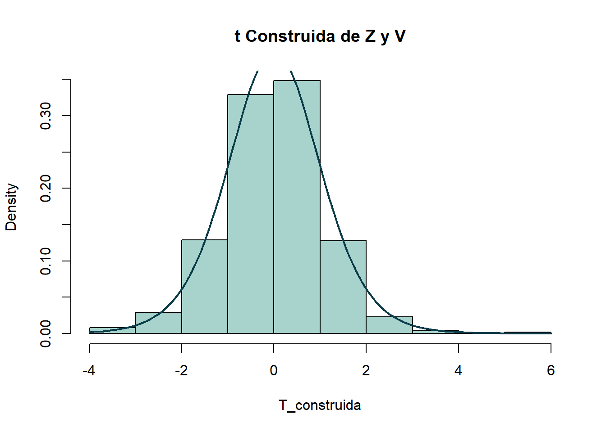

Estadistica Aplicada | 5to semestre de Economía industrual
Author
Cesar Acosta Mejia
Distribución Uniforme Continua
Ejercicio 1.1 (Tiempo de carga entre 2 y 8 segundos)
set.seed(123)limite_inf <-2; limite_sup <-8; n <-1000# 1. Histograma con la densidad teórica encimatiempos <-runif(n, min = limite_inf, max = limite_sup)hist(tiempos, probability =TRUE, col ="#A7D3CC", border ="white",main ="Tiempo de Carga - Uniforme(2, 8)", xlab ="Segundos")curve(dunif(x, min = limite_inf, max = limite_sup), add =TRUE, col ="#0B3C49", lwd =2)

# 2. Percentil 75p75 <-qunif(0.75, min = limite_inf, max = limite_sup)cat("Percentil 75:", p75, "segundos\n")
Percentil 75: 6.5 segundos
# 3. P(X < 4)prob_4 <-punif(4, min = limite_inf, max = limite_sup)cat("Probabilidad P(X < 4):", prob_4, "\n")
Probabilidad P(X < 4): 0.3333333
Cuando el tiempo de carga puede tomar cualquier valor entre 2 y 8 segundos con idéntica probabilidad, el histograma resulta aproximadamente plano, que es la forma característica de la uniforme. El 75% de las cargas termina en menos de 6.5 segundos, y la probabilidad de que una carga dure menos de 4 segundos es 0.3333, es decir, una de cada tres. En la uniforme basta con ver qué fracción del intervalo se cubre: de 2 a 4 hay 2 segundos de los 6 posibles.
Ejercicio 1.2 (TCL con distribución asimétrica/truncada)
set.seed(123)tamanos <-c(5, 15, 30, 60, 120)par(mfrow =c(2, 3))for (tam in tamanos) { medias <-sapply(1:800, function(i) { x <-runif(tam, 0, 1)mean(x[x >0.3]) # se descarta lo menor a 0.3 para introducir sesgo })hist(medias, probability =TRUE, col ="#8FC9BF", main =paste("n =", tam), xlab ="Medias")}par(mfrow =c(1, 1))

En este ejercicio solo se conservan los valores superiores a 0.3, de modo que la variable vive en el intervalo \([0.3, 1]\). Con \(n = 5\) el histograma de las medias se ve disperso e irregular, ya que hay pocos datos (y algunos se eliminan por el recorte), por lo que cada media varía mucho. A medida que \(n\) aumenta, el histograma se estrecha y adopta forma de campana en torno a 0.65, el centro de \([0.3, 1]\). Es el TCL en acción: con muestras más grandes, el promedio se vuelve más normal y más concentrado.
El método consiste en lanzar 100,000 puntos al azar dentro de un cuadrado de lado 2 y contar los que caen en el círculo de radio 1. Dado que el círculo ocupa \(\pi/4\) del área del cuadrado, multiplicar esa proporción por 4 aproxima \(\pi\). El resultado fue 3.14632, a 0.0047 del valor verdadero. Es una buena muestra de cómo los números aleatorios sirven para calcular algo que de aleatorio no tiene nada.
Distribución Exponencial
Ejercicio 2.1 (Simulación con distintos tamaños de muestra y \(\lambda = 0.8\))
n = 10 | Media muestral: 0.796037 | Teórica: 1.25
| Varianza muestral: 1.113221 | Teórica: 1.5625
n = 50 | Media muestral: 1.500098 | Teórica: 1.25
| Varianza muestral: 2.144166 | Teórica: 1.5625
n = 100 | Media muestral: 1.136768 | Teórica: 1.25
| Varianza muestral: 1.053099 | Teórica: 1.5625
n = 500 | Media muestral: 1.262437 | Teórica: 1.25
| Varianza muestral: 1.442836 | Teórica: 1.5625
n = 1000 | Media muestral: 1.29199 | Teórica: 1.25
| Varianza muestral: 1.649077 | Teórica: 1.5625
Con muestras pequeñas, tanto la media como la varianza oscilan bastante, pero al crecer \(n\) se aproximan a los valores teóricos: media de \(1/\lambda = 1.25\) y varianza de \(1/\lambda^2 = 1.5625\). Con \(n = 1000\) resultaron 1.292 y 1.649. Esto ilustra la Ley de los Grandes Números: a más datos, más se parece lo medido a lo real. La varianza tarda más en estabilizarse porque la exponencial tiene una cola larga y de vez en cuando aparece un valor muy alto.
Distribución Gamma
Ejercicio 3.1 (Simulación y TCL)
set.seed(123)alpha <-2.5; lambda <-1.8tamanos_g <-c(5, 10, 20, 30, 50, 100)for (n in tamanos_g) { medias <-sapply(1:1000, function(i) mean(rgamma(n, shape = alpha, rate = lambda)))# Se contrasta con la media teórica y la varianza teórica entre ncat("n =", n, "| Media:", round(mean(medias), 4), "| Teórica:", round(alpha / lambda, 4),"| Varianza:", round(var(medias), 5), "| Teórica:", round(alpha / (lambda^2* n), 5), "\n")}
Para todos los tamaños de muestra, el promedio de las medias se mantiene pegado a \(\alpha/\lambda = 1.3889\) y su varianza se parece a \(\alpha/(\lambda^2 n)\), de modo que se reduce al aumentar \(n\). Dicho de otra forma: el promedio siempre apunta al valor correcto, y cuanto mayor es la muestra, menor es su margen de error.
Ejercicio 3.2 (Suma de exponenciales \(\to\) Gamma)
set.seed(123)tasa_exp <-1.5for (k_exp inc(5, 10, 20)) { sumas_exp <-rowSums(matrix(rexp(1000* k_exp, rate = tasa_exp), ncol = k_exp))hist(sumas_exp, probability =TRUE, main =paste("Suma de", k_exp, "exponenciales"), col ="#A7D3CC")curve(dgamma(x, shape = k_exp, rate = tasa_exp), add =TRUE, col ="#0B3C49", lwd =2)}



En las tres gráficas, la curva Gamma encaja muy bien con el histograma de las sumas. Tiene lógica: si la exponencial describe el tiempo de espera de un evento, la suma de n exponenciales es el tiempo que tarda en ocurrir el \(n\)-ésimo evento, que es exactamente lo que mide una Gamma\((n, \lambda)\). Además, al sumar más exponenciales la forma se va pareciendo a una campana.
Distribución Beta
Ejercicio 4.1 (Convergencia para \(\text{Beta}(2, 5)\))
set.seed(123)forma_a <-2; forma_b <-5muestra_beta <-rbeta(10000, shape1 = forma_a, shape2 = forma_b)hist(muestra_beta, probability =TRUE, col ="#CFE8E3", main ="Beta(2, 5)")curve(dbeta(x, shape1 = forma_a, shape2 = forma_b), add =TRUE, col ="#E4572E", lwd =2)

La Beta solo toma valores entre 0 y 1, por lo que es útil para modelar proporciones o porcentajes. Con \(\alpha = 2\) y \(\beta = 5\) la masa se concentra a la izquierda, con la mayoría de los valores por debajo de 0.4. La media de la muestra fue 0.2862 frente a la teórica \(2/7 = 0.2857\); la varianza muestral fue 0.0258 contra una teórica de 0.0255.
Ejercicio 4.2 (TCL en la distribución Beta)
set.seed(123)medias_beta <-sapply(1:1000, function(i) mean(rbeta(50, shape1 =2, shape2 =5)))hist(medias_beta, probability =TRUE, col ="#8FC9BF", main ="TCL - Beta(2, 5)")curve(dnorm(x, mean =2/7, sd =sqrt((2*5) / ((7^2) *8*50))), add =TRUE, col ="#0B3C49", lwd =2)

Aunque la Beta(2, 5) está cargada hacia un lado, los promedios de muestras de 50 sí forman una campana alrededor de 0.2855, y la curva normal con la media y varianza teóricas se ajusta bien al histograma.
Distribución Weibull
Ejercicio 5.1 (Desarrollo teórico y simulación)
set.seed(123)forma_w <-2.5; escala_w <-100muestra_w <-rweibull(1000, shape = forma_w, scale = escala_w)# Medidas descriptivasmedia_w <-mean(muestra_w)var_w <-var(muestra_w)hist(muestra_w, probability =TRUE, col ="#A7D3CC", main ="Distribución Weibull")curve(dweibull(x, shape = forma_w, scale = escala_w), add =TRUE, col ="#0B3C49", lwd =2)

La Weibull se emplea con frecuencia para modelar la vida útil de máquinas o componentes. La media de la muestra fue 89.08 y la teórica es \(100\,\Gamma(1 + 1/2.5) = 88.73\); la desviación estándar resultó 37.86. Como el parámetro de forma es mayor que 1 (2.5), la probabilidad de falla crece con el tiempo, lo que corresponde a algo que se desgasta: cuanto más se usa, más probable es que falle.
Distribución Ji-cuadrada
Ejercicios 6.1 a 6.5 (Convergencia, TCL, aditividad y relación con la normal)
Media Ji-cuadrada teórica: 10 | Simulada: 9.994578
# Ejercicio 6.5: aditividad Ji1 + Ji2j1 <-rchisq(n_sim, df =5)j2 <-rchisq(n_sim, df =15)suma_j <- j1 + j2 # debe ser Ji-cuadrada con 20 glcat("Media de la suma:", mean(suma_j), "| Esperada:", 20, "\n")
Media de la suma: 20.08132 | Esperada: 20
Dos hallazgos:
Al sumar los cuadrados de 10 normales estándar, la media fue 9.995, prácticamente los 10 grados de libertad. Esa es la forma de construir una Ji-cuadrada: a partir de normales elevadas al cuadrado.
Al sumar una Ji-cuadrada de 5 grados con otra de 15, la media resultó 20.081, cercana a 20. Los grados de libertad se suman: \(\chi^2_{n} + \chi^2_{m} = \chi^2_{n+m}\).
Esto es relevante porque la Ji-cuadrada reaparecerá más adelante al trabajar con varianzas muestrales.
Distribución t de Student
Ejercicio 7.1 (Muestras de tamaño 100, 300 y 1000 con \(df=5\))
set.seed(123)gl_t <-5muestra_t <-rt(1000, df = gl_t)hist(muestra_t, probability =TRUE, col ="#CFE8E3", main ="t de Student (df = 5)", breaks =40)curve(dt(x, df = gl_t), add =TRUE, col ="#0B3C49", lwd =2)curve(dnorm(x), add =TRUE, col ="#E4572E", lty =2, lwd =2)

La línea continua es la \(t\) con 5 grados de libertad y la punteada es la normal estándar. Ambas están centradas en 0 y se parecen, pero la \(t\) es más baja en el centro y sus colas son más pesadas, es decir, asigna más probabilidad a los valores extremos. Por eso se usa con muestras pequeñas: es más “prudente” que la normal cuando hay poca información. Con más grados de libertad, la \(t\) se acerca cada vez más a la normal.
Ejercicio 7.2 y 7.3 (Construcción \(T = \frac{X}{\sqrt{Y/n}}\) y TCL para muestras normales)
set.seed(123)Z <-rnorm(1000)V <-rchisq(1000, df =10)T_construida <- Z /sqrt(V /10)hist(T_construida, probability =TRUE, col ="#A7D3CC", main ="t Construida de Z y V")curve(dt(x, df =10), add =TRUE, col ="#0B3C49", lwd =2)

Aquí la \(t\) se armó “a mano”: una normal estándar dividida entre la raíz de una Ji-cuadrada entre sus grados de libertad. El histograma coincide con la curva \(t\) de 10 grados de libertad, lo que confirma la definición. Así se enlazan las tres distribuciones: la normal y la Ji-cuadrada, juntas, dan origen a la \(t\).
Distribución F de Fisher
Ejercicio 8.1 (Propiedades y verificación)
set.seed(123)# a. Si X ~ t(n) -> X^2 ~ F(1, n)X_t <-rt(10000, df =10)F_de_t <- X_t^2cat("a. Media de t^2:", mean(F_de_t), "| Teórica F(1, 10):", 10/8, "\n")
a. Media de t^2: 1.25076 | Teórica F(1, 10): 1.25
# b. Si X ~ F(a, b) -> 1/X ~ F(b, a)X_f <-rf(10000, df1 =5, df2 =10)inv_f <-1/ X_fcat("b. Media de 1/F(5, 10):", mean(inv_f), "| Teórica F(10, 5):", 5/3, "\n")
b. Media de 1/F(5, 10): 1.627995 | Teórica F(10, 5): 1.666667
Media cociente Ji-cuadradas: 1.259551 | Teórica 10/8: 1.25
Se comprobaron las tres propiedades comparando la media simulada con la teórica (la media de una \(F(a, b)\) es \(b/(b-2)\)):
a. El cuadrado de una \(t\) con 10 grados es una \(F(1, 10)\): media de 1.251 frente a 1.25.
b. El inverso de una \(F(5, 10)\) es una \(F(10, 5)\): media de 1.628 frente a 1.667.
c. El cociente de dos Ji-cuadradas divididas entre sus grados de libertad es una \(F(5, 10)\): media de 1.26 frente a 1.25.
En los tres casos el resultado quedó cerca de lo esperado. La \(F\) es la distribución que se usa para comparar las varianzas de dos grupos.
Conclusión
En esta tarea se revisaron las principales distribuciones continuas: se simularon en R y se contrastó el resultado con la teoría. Lo más importante:
Cada distribución tiene un uso concreto. La uniforme, cuando todo es igual de probable; la exponencial y la Gamma, para tiempos de espera; la Beta, para proporciones; y la Weibull, para la vida útil de equipos.
Las distribuciones están conectadas. Sumar exponenciales produce una Gamma; elevar normales al cuadrado produce una Ji-cuadrada; una normal y una Ji-cuadrada dan lugar a la \(t\); y dos Ji-cuadradas, a la \(F\). No son piezas aisladas.
Con más datos, la simulación converge a la teoría. Se observó con la Ley de los Grandes Números en la exponencial y con el TCL en la uniforme, la Gamma y la Beta: los promedios terminan formando una campana, sin importar la forma de la variable original.
Las últimas tres (Ji-cuadrada, \(t\) y \(F\)) son el fundamento de lo que sigue en inferencia: intervalos de confianza y pruebas de hipótesis.